Rezensenten
August Wilhelm Ambros
*17.11.1816 Mauth bei Prag, †28.06.1876 Wien
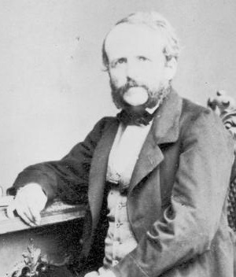
Ambros, 1862 © Wikipedia
Musikhistoriker, Musikkritiker und Komponist. Neffe des Wiener Musikwissenschaftlers Raphael Georg Kiesewetter, trotz juristischer Studien den Künsten zugetan. Unter dem Namen „Flamin“ Mitglied des von ihm mitgegründeten Prager „Davidsbundes“, dem auch Eduard Hanslick (als „Renatus“) angehörte. Sein musikalisches wie journalistisches Vorbild fand Ambros in Robert Schumann, mit dem er von 1845 bis 1850 auch korrespondierte. Das Erstlingswerk Die Grenzen der Musik und Poesie. Eine Studie zur Ästhetik der Tonkunst (Prag 1856) entstand als Antwort auf Hanslicks Schrift Vom Musikalisch-Schönen, seinen Durchbruch als einer der bedeutendsten Musikgelehrten seiner Zeit hatte Ambros aber mit seiner (unvollendet gebliebenen) dreibändigen Geschichte der Musik (1862–1868). 1869 wurde er Professor für Musiktheorie an der Universität Prag, 1872 wechselte er als Kunst- und Musikgeschichtelehrer Erzherzog Rudolfs nach Wien, wo er auch am Konservatorium unterrichtete.
In seinen ästhetischen Urteilen stimmte er zu Beginn in vielen Dingen mit seinem Jugendfreund Hanslick überein, vertrat allerdings später auch kontroversielle Standpunkte. Elisabeth Hilscher würdigt die „am klassischen Kunstideal orientierte Position“ Ambros‘ als so maßgebend, dass diese „die nachfolgende Generation von Musikforschern und -kritikern (z. B. G. Adler, J. Korngold)“ geprägt habe.
Er prägte seine Zeitgenossen v. a. durch zahlreiche Vorträge in Wien und auswärts, als Vorstand musikalischer Vereine und insbesondere als Musikkritiker und Redaktionsmitglied der Wiener Zeitung und der Wiener Abendpost sowie als Korrespondent auswärtiger Blätter.
Über seine Tätigkeit als Musikkritiker heißt es in dem Nachruf des Neuen Wiener Abendblattes vom 28. Juni 1876: „Seit seinem Aufenthalte in Wien, der mit Ende der sechziger Jahre begann, besorgte Ambros die musikalische Kiritk für die ‚Wiener Abendpost‘, die sich stets durch ein gewisses Wohlwollen für alle Produktion und Reproduktion auszeichnete.“
Quelle: Elisabeth Th. Hilscher, Art. „Ambros, August Wilhelm‟, in: Oesterreichisches Musiklexikon online, Zugriff: 6.4.2021. Nachruf, in: Neues Wiener Abendblatt, Jg. 9, Nr. 176, 28.06.1876, S. 3f., Nachruf, in: Wiener Abendpost, Beilage zur Wiener Zeitung, Nr. 146, 28.06.1876, S. 2.Carl Debrois van Bruyck
*14.03.1828 Brünn, †02.08.1902 Waidhofen an der Ybbs/NÖ
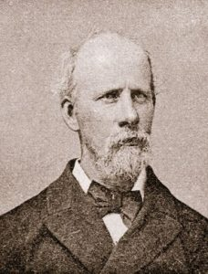
© Uwe Harten
Musikschriftsteller und Komponist. 1850 Kompositionsunterricht bei Johann Rufinatscha, 1853–1868 als Musikschriftsteller für mehrere Zeitschriften in Österreich und Deutschland tätig, darunter 1856–1863 als Nachfolger seines Freundes Eduard Hanslick für die Wiener Zeitung. Als überzeugter Gegner der Neudeutschen propagierte er als einer der Ersten in Wien die Werke Robert Schumanns und jene von Johannes Brahms. Mit beiden soll er auch in näherem Kontakt gestanden haben. In der Folge beschäftigte er sich längere Zeit mit musikhistorischen und philosophischen Studien und übersiedelte 1874 nach Waidhofen/Ybbs, wo er sich v. a. seinem kompositorischen Schaffen und einem umfangreichen Briefwechsel mit Schriftstellern (u. a. Paul Heyse, Robert Hamerling) und Musikern widmete.
Quellen: Uwe Harten, Art. „Debrois van Bruyck, Carl‟, in: Oesterreichisches Musiklexikon online, Zugriff: 6.4.2021; Linzer Tages-Post, Jg. 38, Nr. 182, 8. August 1902, S. 3.Wilhelm Frey
*07.12.1833 Hohenems/Vorarlberg, †16.04.1909 Wien
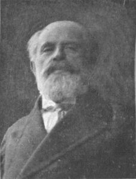
© Österreichs Illustrierte Zeitung, Heft 30, 25. April 1909, S. 693.
Musikkritiker, Journalist und Schriftsteller, Vizepräsident des Journalisten- und Schriftstellervereines Concordia. Widmete sich zunächst der pädagogischen Laufbahn und wurde zum Professor für Mittelschulen graduiert. Zusätzlich absolvierte er zur Zeit seiner Lehrtätigkeit in Prag die Orgelschule. Während seiner Studien und seinem pädagogischen Beruf war Frey erfolgreich schriftstellerisch tätig und zählte in der zweiten Hälfte der 1850er- und ersten Hälfte der 1860er- Jahre zu den ersten deutschen Jugendschriftstellern neben den damaligen Größen Gustav Nieritz und Franz Hofmann. 1865 ging er nach Wien, wo er als Offizial in das administrative Revisionsamt der Kaiser Ferdinands-Nordbahn eintrat, dort Sekretär und Chef des Personalbureaus wurde, bevor er 1873 den Eisenbahndienst verließ und sich vollends der bis dahin nebenbei ausgeübten Journalistik widmete.
1858–1867 Musikreferent der Morgenpost, seit der Gründung des Neuen Wiener Tagblatt (1873) „fast von den ersten Nummern an“ Musikkritiker, ab den 1890er Jahren Lokalschilderer dieses Blattes, dem er bis zu seinem Tod angehören sollte (Neues Wiener Tagblatt, 17. April 1909, S. 8). In diesem Nachruf heißt es weiters: „Seiner Liebe zum musikalisch Schönen, seiner Kenntnis des Theaters stand eine große Erfahrung zur Seite, an die Direktoren und Kapellmeister, Musiker und Sänger oft genug appellierten.“ Konkret wird Hofoperntheater-Direktor Jahn erwähnt, der „mit seinen Partituren oft genug bei Frey erschien, um dessen Gutachten einzuholen.“
Quelle: Elisabeth Th. Hilscher, Art. „Frey, Wilhelm‟, in: Oesterreichisches Musiklexikon online, Zugriff: 6.4.2021; Österreichs Illustrierte Zeitung, Heft 30, 25. April 1909, S. 694; Illustrierte Kronen-Zeitung, Nr. 3340, 17. April 1909, S. 8; Das Vaterland, 17. April 1909, S. 6; Arbeiter-Zeitung, 18. April 1909, S. 6; Neues Wiener Tagblatt, 17. April 1909, S. 8.Fritz Gaigg von Bergheim
*31.10.1848 Wien, †1918
Musikschriftsteller, hauptberuflich Mittelschulprofessor an der Rainerschen Realschule in Wien, im Ersten Weltkrieg zusätzliche Lehrstelle an den Horakschen Musikschulen. Besonders eng ist sein Name als Musikkritiker mit der Reichspost verbunden. In einem Nachruf charakterisierte die Redaktion der Reichspost ihren verstorbenen Mitarbeiter mit den Worten:
„Als Musikschriftsteller war Friedrich Gaigg R. v. Bergheim in allen Wiener Theatern und Konzertsälen fast eine Generation hindurch zu Hause; die langjährige Erfahrung, die weit zurückreichende Personalkenntnis und seine ideale Liebe zur Musik, das waren die Charakteristiken dieses Mannes. in seinen Besprechungen spiegelte sich das wohlwollende Wesen des grundgütigen Menschen, der mit Vorliebe neu aufstrebende Talente förderte und sie mit freundlichen Worten in seinen niemals strengen Kritiken zum Aufstieg, aber auch zur Selbstzucht, zum fleißigen Studium ermunterte.“
Weiters wurde in diesem Nachruf nicht nur der „Heimgang eines ihrer ältesten und treusten Mitarbeiter“ betrauert, sondern gleichzeitig der Verlust eines jener „alten Garde, die mit Opferwillen mitgeschaffen hat, als es galt, das Blatt der Katholiken Oesterreichs emporzubringen.“ Insbesondere habe sich Gaigg von Bergheim durch seine Vielfältigkeit ausgezeichnet. Zu seinem Metier zählten neben Opernkritiken auch Besprechungen von Operetten und Konzerten aller Art, kirchenmusikalische Aufführungen und Vereinsveranstaltungen – und dies neben seiner Lehrtätigkeit und seinen historischen Studien, mit denen er wiederholt als Vortragender in die Öffentlichkeit getreten sei, u. a. im Katholischen Schulverein. Gaigg von Bergheim engagierte sich zudem im katholischen Vereinsleben und war etwa Obmann des Piusvereins der Ortsgruppe Leopoldstadt.
Kürzel: G. v. B.
Quellen: Nachruf, in: Reichspost, Mittagsblatt, Jg. 25, Nr. 90, 25.02.1918, S. 3, Todesanzeige, in: Deutsches Volksblatt, Morgenausgabe, Jg. 30, Nr. 10469, 26.02.1918, S. 8.August Göllerich
*02.07.1859 Linz, †16.03.1923 Linz
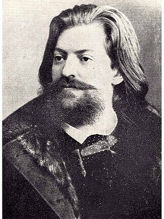
© Wessely: Musik in Oberösterreich, 1951
Musikschriftsteller. In Wien Studium an der Technischen Hochschule sowie bei Anton Bruckner. 1884 Bekanntschaft mit Franz Liszt, der ihn als Klavierschüler aufnahm und dessen Sekretär Göllerich bis zu Liszts Tod 1886 war. Danach in Wien Musikkritiker, der sich besonders für das Werk Bruckners und Wagners einsetzte. 1890 an der Ramannschen Musikschule in Nürnberg tätig, 1896 Wechsel als Musikdirektor nach Linz, wo Göllerich das Linzer Musikleben wesentlich beeinflusste und förderte, u. a. als Leiter von Sängerbund und Frohsinn sowie von ihm veranstalteten Konzerten. Autor einer grundlegenden Bruckner-Biographie, deren problematisches Bruckner-Bild (Musikant Gottes, „Deutscher Michel“) bis heute nachwirkt.
Göllerich prägte für Brahms u. a. die Floskel „Meister der musikalischen Nüchternheit“, die in der Folge auch von dessen Nachfolger beim Deutschen Volksblatt, Hans Puchstein, gerne zitiert wurde.
Quellen: Elisabeth Th. Hilscher, Art. „Göllerich, Familie‟, in: Oesterreichisches Musiklexikon online, Zugriff: 12.4.2021; Jerger, Veit Wilhelm: „August Göllerich (1859–1923). Eine biographische Skizze„, in: Oberösterreichische Heimatblätter, 29. Jg., Heft 1/2 (1975), S. 38–46.Ludwig Benedikt Hahn
*23.09.1844 Mühlhausen/Böhmen, †26.04.1923
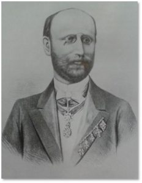
© Wikipedia
k. k. Hofrat und Journalist, konvertierte 1877 vom Judentum zum Katholizismus.
Mitredakteur des Neuen Fremdenblattes, des Fremdenblattes und schließlich der Wiener Zeitung, bei der er zugleich das Musikreferat in der Wiener Abendpost führte. 1889 wurde er Vorstand des Telegraphen-Correspondenz-Bureaus und war auch Herausgeber der Politischen Correspondenz. Als Kritiker zeichnete Hahn mit »h«.
Vater der Malerin und Grafikerin Louise Fraenkl-Hahn (1878–1939), des Mathematikers Hans Hahn (1879–1934) sowie der Philosophin und Mathematikerin Olga Hahn-Neurath (1882–1937).
Quelle: Neue Freie Presse, 3. Mai 1923, S. 7.Eduard Hanslick
*11.09.1825 Prag, †06.08.1904 Baden bei Wien
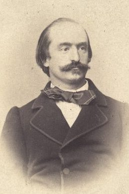
© ÖNB / Löwy
Musikästhetiker, Musikkritiker, „Meister des Feuilletons“ (Robert Hirschfeld über Hanslick in: Wiener Abendpost, 11. August 1904, S. [1]). Ab 1843 Klavier-, Theorie- und Kompositionsunterricht bei Wenzel Johann Tomaschek, ab 1844 Jusstudium in Prag bzw. ab 1846 in Wien. Promotion 1849, danach Beamter, u.a. am Kultusministerium in Wien.
Hanslick war ab 1846 bei der Wiener Allgemeinen Musik-Zeitung, ab 1848 bei der Wiener Zeitung, ab 1855 bei der Presse und von 1864 bis 1904 bei der Neuen Freien Presse tätig (bis 1901 im Musikreferat, das in der Folge von Richard Heuberger bzw. Julius Korngold übernommen wurde) und stieg im Laufe der Jahre zu einem der einflussreichsten Musikkritiker seiner Zeit auf. 1854 erreichte er große Publizität mit seiner Schrift Vom Musikalisch-Schönen, die 1856 von der Wiener Universität als Habilitationsschrift anerkannt wurde und ihn zum Privatdozenten „für Geschichte und Ästhetik der Tonkunst“ machte. 1861 erhielt Hanslick eine Professur, die er bis zu seiner Emeritierung 1895 innehatte.
Verankerung im Wiener Musikleben, u. a. als staatlicher Berater für die Vergabe von Musikstipendien (Einsatz für Antonín Dvořák) oder als offizieller Berichterstatter für Instrumentenbau bei den Weltausstellungen in London (1862), Paris (1867, 1878) und Wien (1873) sowie als Juror bei Musikwettbewerben, 1885 als Teilnehmer an der Wiener Stimmtonkonferenz. Von 1893 bis 1897 Präsident der Gesellschaft zur Herausgabe von Denkmälern der Tonkunst in Österreich und ab 1884 Mitarbeit am sogenannten „Kronprinzenwerk“.
Hanslick hatte Kontakte zu zahlreichen Musikern und zählte zum Freundeskreis von Johannes Brahms und Theodor Billroth.
Quellen: Barbara Boisits, Art. „Hanslick, Eduard‟, in: Oesterreichisches Musiklexikon online, Zugriff: 30.4.2021; Neue Freie Presse, 07. August 1904, S. 7–9; r. h. [= Robert Hirschfeld]: Nachruf, in: Wiener Abendpost, 11. August 1904, S. [1]f.]Rudolf Hirsch
*01.02.1816 Napajedl/Mähren, †10.03.1872 Wien
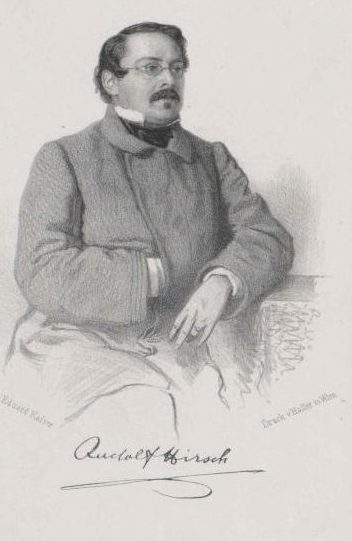
© ÖNB
Schriftsteller und Musiker, studierte Philosophie und Jus, wirkte ab 1843 im österreichischen Staatsdienst. 1850 Umsiedelung nach Wien, ab 1852 als Hofkonzipist der k. k. obersten Polizeihofstelle und Leiter der Amtsbibliothek tätig, 1861–1870 als Ministerialsekretär. Nebenbei Beschäftigung mit Poesie (besonderen Erfolg hatte er mit Irrgarten der Liebe, Wien 1850) und Musik (er vertonte ca. 100 Lieder).
1863–1872 schrieb er als Musikreferent für die Wiener Zeitung. Zusätzlich verfasste er unter dem Pseudonym „Dr. Schütze“ Musikberichte für die Vorstadt-Zeitung.
Quellen: Andrea Harrandt, Art. „Hirsch, Rudolf‟, in: Oesterreichisches Musiklexikon online, Zugriff: 8.4.2021; Beilage zu Nr. 69 des Neuen Wiener Tagblatt, 11.3.1872.Robert Hirschfeld
*17.09.1857 Großmeseritsch/Mähren, †02.04.1914 Salzburg
© Österreichische Illustrierte Zeitung, 12. April 1914, S. 12
Musikpädagoge und Musikkritiker. Sohn eines Rabbiners, studierte neben Rechtswissenschaft auch Musikwissenschaft (bei Eduard Hanslick), Promotion zum Doktor der Philosophie 1883 mit der Arbeit „Johan de Muris und seine Werke“. Ab 1882 Lehrer für Musikästhetik am Konservatorium der Gesellschaft der Musikfreunde, ab den späten 1880er Jahren Musikkritiker, u. a. bei der Wiener Sonn- und Montagszeitung, Die Neue Freie Presse und die Wiener Allgemeine Zeitung sowie Korrespondent für die Frankfurter Allgemeine Zeitung. Von besonderer Bedeutung sind Hirschfelds Kritiken für die Wiener Abendpost (er gehörte als Musikreferent der Wiener Zeitung von 1896 bis 1913 an) und als Theaterreferent beim Neuen Wiener Tagblatt (bis 1913). Pseudonym: L. A. Terne.
Hirschfeld redigierte ab 1893 die Programmbücher der Konzerte der Wiener Philharmoniker und war Begründer der Volkskonzerte mit klassischem Programm im Volksbildungsverein, die er über acht Jahre auch selbst leitete. Zudem rief er 1884 „Renaissance-Abende“ zur Pflege des a-cappella-Gesangs und Jugendkonzerte ins Leben. Hirschfeld war u. a. Mitbegründer und Vorstandsmitglied des Wiener Concert-Vereins, Mitglied der Kunstkommission des k. k. Ministeriums für Kultus und Unterricht in Wien, der Akademie für Musik und darstellende Kunst und ab 1898 der Denkmäler der Tonkunst (DTÖ). Vollendete die von Richard von Perger begonnene „Geschichte der Gesellschaft der Musikfreunde“ bevor er 1913 als Leiter der Musikschule am Mozarteum nach Salzburg berufen wurde, wo er Vorarbeiten zu den Musikfestspielen in Salzburg leistete.
Hirschfeld war Anhänger von Richard Wagner, Bruckner, Brahms und Hugo Wolf und galt als „kampffreudige Natur“. Diesen Ruf hatte er nicht zuletzt mit seiner 1885 erschienenen Streitschrift Das kritische Verfahren Eduard Hanslick’s begründet, in der er „gegen den damals führenden Tageskritiker die Axt erhob“ und sich dabei „als gewandter und scharfer Gegner bewiesen“ habe. Weiters heißt es in den Signalen für die musikalische Welt vom 8. April 1914: „Der Angriff war seine liebste Kampfmethode, und er führte seine Deduktionen mit einer gewissen Leidenschaft, der man schwer widerstehen konnte, zum Kampfe. In seinem Kunstgeschmack war er der gerade Gegenpol Hanslick’s, den mehr das Zierliche, Sinnliche in der Musik reizte, während Hirschfeld immer das Grosse, mochte es auch ungeglättet sein, verteidigte.“
Hirschfeld war 1894 vom Judentum zur Evangelischen Kirche konvertiert; verheiratet mit der Opernsängerin Emma (Emmy) Karlona.
Quellen: Uwe Harten, Art. „Hirschfeld, Robert (Pseud. L. A. Terne)‟, in: Oesterreichisches Musiklexikon online, Zugriff: 8.4.2021; Hofinger, Johannes: „Robert Hirschfeld – Schulleiter für 32 Tage“, in: Hinterberger, Julia (Hrsg.): Von der Musikschule zum Konservatorium. Das Mozarteum 1841–1922, S. 352-365; Signale für die musikalische Welt, 8. April 1914, S. 588; Wiener Abendpost, Beilage zur Wiener Zeitung, 2. April 1914, S. 4-5; Arbeiter-Zeitung, Morgenblatt, 3. April 1914, S. 1-2; Neues Wiener Journal, 3. April 1914, S. 6.Camillo Horn
*29.12.1860 Reichenberg/Böhmen, †03.09.1941 Wien
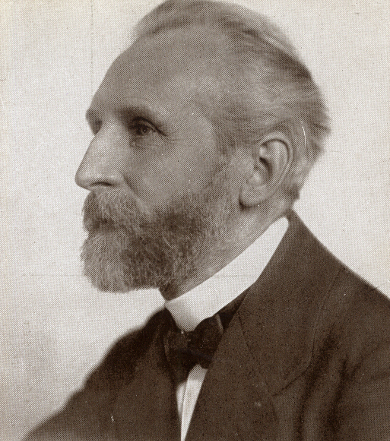
Camillo Horn, um 1920 © Wienbibliothek im Rathaus, Tagblattarchiv: Fotosammlung, TF-004365
Komponist, Musiker, Musikkritiker. Studierte Harfe am Prager Konservatorium, dreijähriger Militärdienst im Infanterie-Regiment 34 in Wien, Privatschüler Anton Bruckners. 1885 Staatsprüfung für Musik, danach als Chorleiter, Dirigent und Gesangslehrer in Wien tätig, u. a. als Leiter des Musikvereins „Haydn“, wo er sich für Wagner, Liszt und Bruckner einsetzte. Gesangslehrer am Wiener Piaristengymnasium, 1910–1916 am Neuen Wiener Konservatorium, 1916–1931 Professor für Harmonielehre an der Wiener Akademie für Musik und darstellende Kunst.
Horn, ein glühender Deutschnationaler, war zudem Musikkritiker beim Deutschen Volksblatt. Sein eigenes, deutsch-national geprägtes Werk (großteils Vokalmusik) steht unter dem Einfluss von Wagner und Bruckner. Über seine geistig-politische Ausrichtung gibt ein Nachruf im Völkischen Beobachter Aufschluss:
© Völkischer Beobachter, 04.09.1941, S. 5, ANNO/ÖNB.
Quellen: Andrea Harrandt, Art. „Horn, Camillo (Kamillo Andreas)‟, in: Oesterreichisches Musiklexikon online, Zugriff: 12.4.2021; Völkischer Beobachter, 4. September 1941, S. 5.Max Kalbeck
*04.01.1850 Breslau, †04.05.1921 Wien
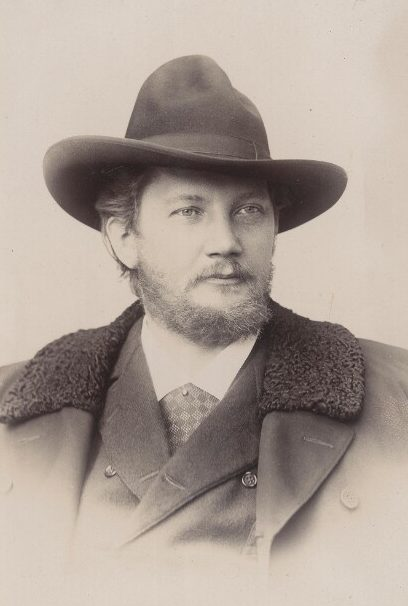
© ÖNB / Hans
Musikschriftsteller, Musikkritiker und Übersetzer. 1861 Sängerknabe in Breslau unter Leopold Damrosch. Studium der Rechtswissenschaften, ab 1873 Münchener Musikschule, wo er u. a. bei Joseph Rheinberger Komposition studierte. 1880 kam Kalbeck auf Empfehlung Hanslicks nach Wien, wo er bei verschiedenen Zeitungen tätig war: als Musikreferent bis 1883 bei der Wiener Allgemeinen Zeitung, 1883–1890 bei der Presse, 1890–1895 bei der Montags-Revue sowie ab Ende 1895 beim Neuen Wiener Tagblatt, bei der er bereits ab 1886 als Theaterrezensent gewesen war.
Kalbeck wurde neben Hanslick zu einem der einflussreichsten Kritiker in Österreich, wobei er wie dieser ein heftiger Gegner der Musik von Richard Wagner, Anton Bruckner und Hugo Wolf war. Wie Hanslick wurde auch Kalbeck ein Freund und Parteigänger von Brahms, den er 1874 kennenlernte und dessen Biographie (4 Bde., 1904–1914) trotz der teils sehr subjektiven Darstellungsweise eine der wichtigsten musikhistorischen Quellen der Brahms-Biographik darstellt.
Quellen: Uwe Harten, Art. „Kalbeck, Julius Max Heinrich (Pseud. Jeremias Deutlich)‟, in: Oesterreichisches Musiklexikon online, Zugriff: 30.4.2021.Eduard Kulke
*28.05.1831 Nikolsburg, †20.03.1897 Wien
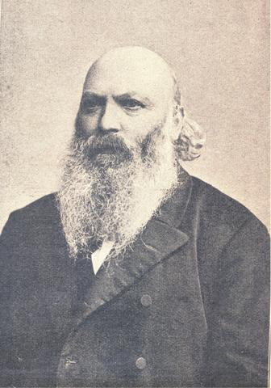
© Wikipedia
Journalist und Schriftsteller, Sohn eines Rabbiners, ab 1853 Studium in Wien und ab 1854 in Prag am Polytechnikum Mathematik, Physik und später deutsche Sprache und Literatur. Studienabbruch, Arbeit 1858/59 als Lehrer an der israelitischen Schule in Pécs, ab 1859 Tätigkeit als Journalist und Schriftsteller in Wien, u. a. für die Allgemeine Zeitung des Judentums und dem Wiener Jahrbuch für Israeliten.
Im Pester Lloyd vom 24. März 1897 finden sich Angaben zu Kulkes Tätigkeit als Musikkritiker:
[bibl. Angabe fehlt].
Weiters war Kulke langjähriges Mitglied des Journalisten- und Schriftstellervereins „Concordia“, der auch für die Todesanzeige in der Wiener Zeitung verantwortlich zeichnete (vgl. Wiener Abendpost, Beilage zur Wiener Zeitung, Nr. 66, 22.03.1897, S. 3).
Kürzel: Ed. K.
Quellen: Ludwig Julius Fränkel: Kulke, Eduard. In: Allgemeine Deutsche Biographie (ADB). Band 51, Duncker & Humblot, Leipzig 1906, S. 436–438, Wikipedia. Nachruf, in: Pester Lloyd, Jg. 42, Nr. 71, 24.03.1897, 1. Beilage, S. [1], Nachruf, in: Die Neuzeit, Jg. 37, Nr. 13, 26.03.1897, S. 133.Hans Paumgartner
*10.01.1844 Micheldorf/OÖ, †23.05.1896 Wien
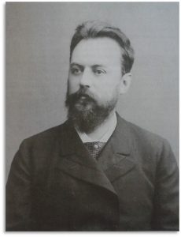
Um 1885 © Arbeitsstelle „Anton Bruckner“, ÖAW, Wien
Pianist, Komponist, Musikschriftsteller. Bis 1880 als Jurist tätig, widmete er sich nach einem erfolgreichen Debüt als Pianist unter Felix Mottl im November 1879 ganz der Musik, u. a. als Sologesang-Korrepetitor an der Wiener Hofoper. Ab 1880 Musikreferent der Wiener Zeitung, wobei er diese Tätigkeit in den letzten Monaten aufgrund seiner Krankheit aufgeben musste (vgl. Neue Freie Presse, 23.05.1896, S. 3).
Paumgartner zählte sowohl Bruckner als auch Brahms zu seinem Freundeskreis und war gleichzeitig Vorkämpfer für Richard Wagner und Hugo Wolf in Wien. Geschätzt als Kammermusiker und Klavierbegleiter. Zeitweise verheiratet mit der Sängerin Rosa Papier (1858–1932), Vater des Dirigenten, Musikforschers, Komponisten und Herausgebers Bernhard Paumgartner (1887–1971).
Die Wiener Abendpost vom 23. Mai 1896 über sein musikkritisches Wirken: „Als Musik-Kritiker unseres Blattes, dessen Verbande er seit 15 Jahren angehörte, hat er den Lesern stets willkommene, eben so sachkundige als lebendige Beurtheilungen aller auf dem Musik-Gebiete wichtigen Erscheinungen geboten.“
Ausschnitte aus Robert Hirschfelds Nachruf in der Presse vom 24.05.1896:
[bibl. Angabe fehlt]
sowie als Fazit und Schlusswort:
[bibl. Angabe fehlt]
Kürzel: dr. h. p.
Quellen: Eva Maria Hois, Art. „Paumgartner, Familie‟, in: Oesterreichisches Musiklexikon online, Zugriff: 8.4.2021; Höslinger, Clemens: „Kontroversen um Brahms, Richter und Bruckner. Zu den frühen (anonymen) Musikkritiken Hans Paumgartners (1880-1882)“, in: Anton Bruckners Wiener Jahre: Analysen – Fakten – Perspektiven (Wiener Bruckner-Studien, Bd. 1), hrsg. von Renate Grasberger, Elisabeth Maier und Erich Wolfgang Partsch, 2009, S. 129-143. Todesanzeige, in: Neue Freie Presse, Abendblatt, Nr. 11404, 23.05.1896, S. 3, Nachruf, in: Wiener Abendpost, Beilage zur Wiener Zeitung, Nr. 119, 23.05.1896, S. 2, Hirschfeld, Robert: „Dr. Hans Paumgartner †“, in: Die Presse, Morgenausgabe, Jg. 49, Nr. 143, 24.05.1896, S. 5.Hans Puchstein
*1865 im Pommerschen, †30.01.1937 Wien
Studium der Germanistik an der Universität Wien sowie Besuch der Vorlesungen Anton Bruckners. Widmete sich der Journalistik und trat dem Kärntner Tagblatt, 02.02.1937, S. 4 zufolge 1890 als Schriftleiter bei der neugegründeten Wiener Tageszeitung Deutsches Volksblatt (sogenanntes „Vergani-Blatt“) ein. Weiters heißt es: „Nach dem Übertritt des bisherigen Chefredakteurs Patzelt, seines Schwagers, in den Lehrberuf, übernahm Puchstein die redaktionelle Leitung des Blattes, bis dieses mehrere Jahre nach dem Ableben seines Gründers in den Umsturzjahren in andere Hände überging, um bald darauf (1922) eingestellt zu werden.“
Nach dem Ersten Weltkrieg trat Puchstein in die Presseabteilung der ersten burgenländischen Landesregierung ein und wurde später Kanzleidirektor des burgenländischen Landtages. Ab 1928 gehörte er dem Redaktionsstab der Wiener Zeitung an. Puchstein war zudem Präsident der Deutsch-österreichischen Schriftstellergenossenschaft.
Gräflinger, Franz: „Vier unveröffentlichte Briefe Anton Bruckners. Aus dem Kampf des Meisters um die Anerkennung der Welt“, in: Neues Wiener Tagblatt, 29.01.1939, S. 14, ANNO/ÖNB.
Das Kärntner Tagblatt vom 2. Februar 1937 streicht in seinem Nachruf auf Puchstein besonders dessen deutsche Herkunft und Gesinnung hervor:
[bibl. Angabe fehlt]
Ein Bruder, Dr. Ernst Puchstein, war langjähriger deutscher Vizekonsul in Wien, Puchsteins Sohn war der Schauspieler Fritz Puchstein. In der Forschung des Öfteren verwechselt mit Hans Paumgartner („dr. h. p.“).
Quellen: Der Wiener Tag, 31. Jänner 1937, S. 10; Kleine Volks-Zeitung, 31. Jänner 1937, S. 9; Gräflinger, Franz: „Vier unveröffentlichte Briefe Anton Bruckners. Aus dem Kampf des Meisters um die Anerkennung der Welt„, in: Neues Wiener Tagblatt, 29. Jänner 1939, S. 14, Nachruf, in: Die Stunde, Jg. 15, Nr. 4168, 31.01.1937, S. 3, Nachruf, in: Kärntner Tagblatt, Jg. 44, Nr. 26, 02.02.1937, S. 4.Eduard Schelle
*31.05.1816 Biesenthal, Brandenburg, †16.11.1882 Wien
Musikkritiker und Musikschriftsteller. Sohn eines Pastors, Unterricht in Klavier, Orgel und Harmonielehre. Studienabschluss in Theologie, zugleich Kompositionsunterricht bei Adolph Bernhard Marx, verließ Deutschland aufgrund der politischen Unruhen 1848, lebte bis 1856 als Erzieher bei adeligen Familien in Russland und widmete sich danach musikgeschichtlichen Studien (insbesondere über die Sixtinische Kapelle) in Paris, verschiedenen italienischen Städten sowie München. Mit seiner Schrift über die Pariser „Tannhäuser“-Aufführung 1861, „Der Tannhäuser in Paris oder Der dritte musikalische Krieg“, in der er für Wagner Partei ergriff, begann seine ausgedehnte musikschriftstellerische Tätigkeit, die neben Aufsätzen zur Musikgeschichte das musikalische Gegenwartsschaffen umfasste, speziell jenes der Oper. Veröffentlichungen u. a. in der Neuen Zeitschrift für Musik, den Signalen für die musikalische Welt, im Concordia-Kalender, der Oesterreichischen National-Revue sowie „Wiener Componisten“ (in mehreren Folgen).
1864 erhielt Schelle einen Ruf nach Wien, um in der Nachfolge Hanslicks das Musikreferat der Wiener Tageszeitung Die Presse zu übernehmen, welches er bis zu seinem Tod erfolgreich leiten sollte. Ab 1878 Professor für Musikgeschichte am Konservatorium der Musikfreunde in Wien, fungierte 1873 als Experte der österreichischen Regierung für die Gruppe der Musikinstrumente auf der Wiener Weltausstellung, Mitglied des Journalisten- und Schriftstellerverbandes „Concordia“. Schelle war mit fast allen Persönlichkeiten des Musiklebens seiner Zeit bekannt und vertraut. Er war nicht zuletzt aufgrund seiner ausgezeichneten musikwissenschaftlichen Kenntnisse sowie seiner unparteiischen Urteilsweise als Musikkritiker hochgeschätzt.
Quellen: Fuchs, Ingrid: „Schelle, (Karl) Eduard (1814-1882), Musikschriftsteller und Musikkritiker“, in: Österreichisches Biographisches Lexikon und biographische Dokumentation, Zugriff: 16.4.2021; Alexander Rausch, Art. „Schelle, Karl Eduard‟, in: Oesterreichisches Musiklexikon online, Zugriff: 16.4.2021.Josef Scheu
*15.09.1841 Wien, †12.10.1904 Wien
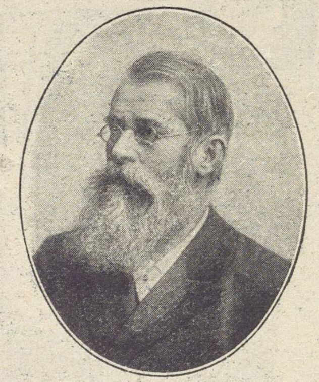
© Wikipedia
Chorsänger im Theater an der Wien, Musikstudium am Konservatorium der Stadt Wien, 1865 Hornist am Burgtheater.
Auch als Komponist erfolgreich, besondere Popularität erreichte sein 1868 uraufgeführtes „Lied der Arbeit“. 1878 Gründung und Leitung des Arbeiter-Sängerbundes Wien. 1890 Mitbegründer und Chorleiter der „Freien Typographie“. Da er auch Frauen die Mitwirkung ermöglichte, schuf er damit den ersten gemischten Arbeiterchor.
1872 Gründung des „Wiener Musikerbunds“, der ersten Interessenvertretung für Musiker, dessen behördliche Auflösung bereits 1873 erfolgte. Wegen seiner gewerkschaftlichen und politischen Tätigkeiten vom Burgtheater 1881 zwangspensioniert und von der Polizei verhaftet.
Ab 1895 Musikkritiker für die Arbeiter-Zeitung.
Quellen: Fuchs, Ingrid: „Scheu, Josef Franz Georg“, in: Österreichisches Biographisches Lexikon 1815–1950 (ÖBL), Bd. 10, Wien 1994, S. 97 f.Projektpartner